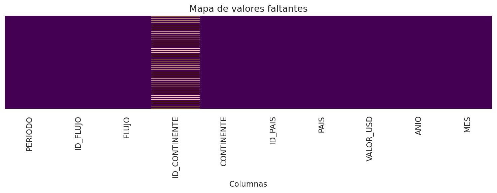
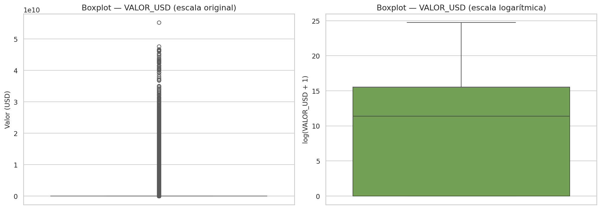
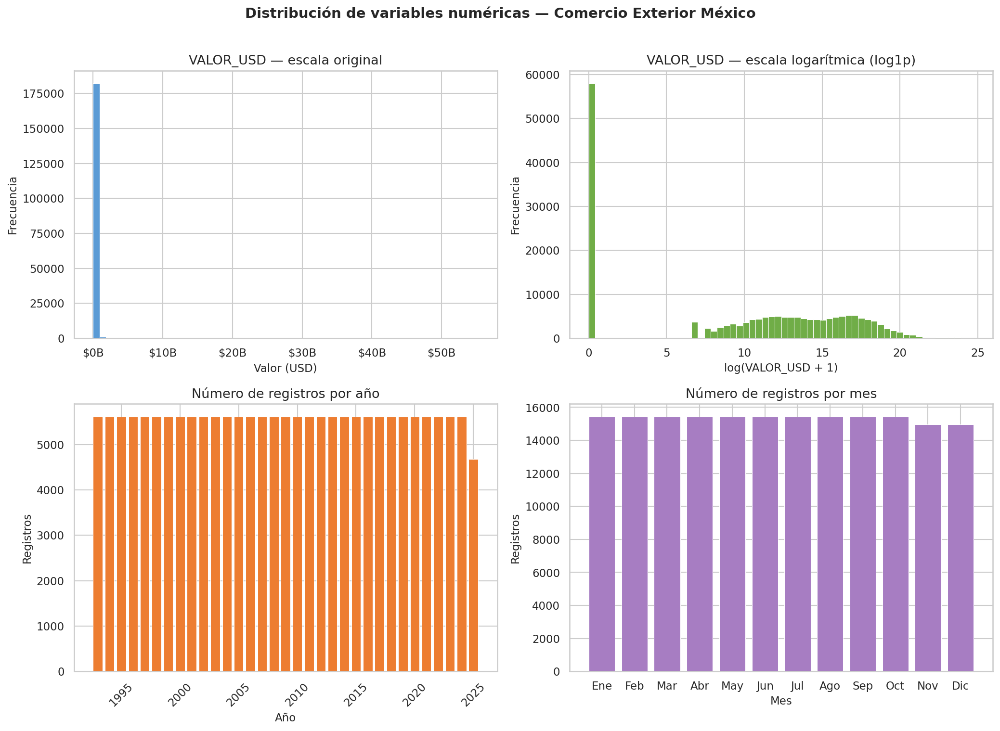
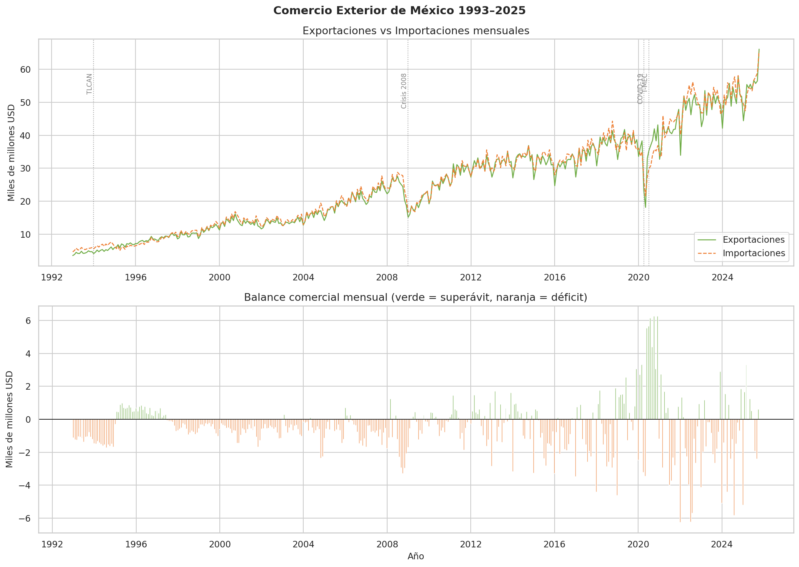
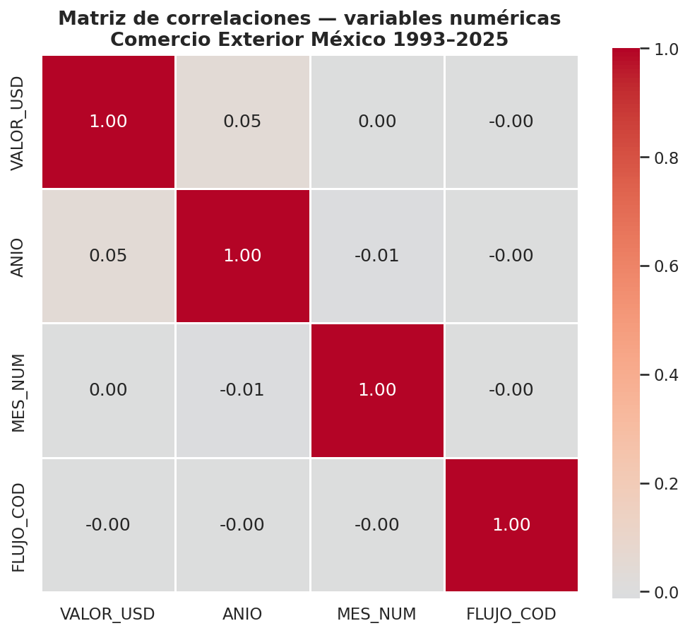

Análisis Exploratorio de Datos
Descripción general
El dataset contiene 184,392 registros mensuales de 180 países socios en 6 continentes. VALOR_USD presenta un coeficiente de variación superior al 300%, reflejo de la enorme heterogeneidad entre socios comerciales — desde pequeñas economías insulares hasta Estados Unidos, el principal socio de México.
Limpieza de datos
Valores faltantes
Únicamente ID_CONTINENTE presenta valores faltantes: 28,368 registros (15.4%). Dado que CONTINENTE contiene la misma información sin faltantes, se excluyó ID_CONTINENTE del modelado sin pérdida de información.

ID_CONTINENTE presenta datos ausentes (15.4%).Registros duplicados
No se encontraron registros duplicados (0 filas, 0.0%).
Valores atípicos
VALOR_USD presenta distribución fuertemente asimétrica. Los valores extremos corresponden a intercambios con EE.UU., un fenómeno real y económicamente relevante, no un error de captura. Por ello no se eliminaron; en su lugar se aplicó transformación log1p para el modelado.

VALOR_USD en escala original (izquierda) y logarítmica (derecha).Distribución de variables numéricas

La figura revela cuatro patrones:
VALOR_USDconcentrado cerca de cero con pocos valores extremos muy grandes.- Distribución bimodal en escala logarítmica, que refleja dos grupos: socios de alto volumen (EE.UU., China) y el resto del mundo.
- Registros distribuidos uniformemente por año (~5,500/año), con ligera reducción en 2025 por año incompleto.
- Distribución mensual homogénea, lo que descarta estacionalidad fuerte en el número de registros.
Serie de tiempo 1993–2025

La serie permite identificar cuatro hallazgos estructurales:
| Evento | Año(s) | Observación |
|---|---|---|
| Tendencia creciente | 1993–2025 | El comercio exterior pasó de ~$6,000 a más de $60,000 millones USD/mes |
| Crisis financiera global | 2008–2009 | Caída abrupta del ~45%, seguida de recuperación rápida |
| COVID-19 | 2020 | Contracción severa con recuperación en forma de V |
| T-MEC | 2020– | Superávits más frecuentes; balance menos negativo |
De acuerdo con el Informe Trimestral del Banco de México (enero–marzo 2026), el PIB de México registró una contracción de 0.62% en el primer trimestre de 2026, en un entorno de debilidad generalizada de la actividad económica. Al mismo tiempo, las importaciones no petroleras alcanzaron niveles máximos históricos, impulsadas principalmente por equipo de cómputo.
Correlaciones entre variables

Las correlaciones más relevantes para el modelado supervisado:
ExportacioneseImportacionestienen correlación alta entre sí (~0.95), lo esperado dado que los socios más activos exportan e importan volúmenes similares.BALANCE(Exportaciones − Importaciones) tiene correlación casi perfecta conSUPERAVIT, lo que confirma la definición correcta de la variable objetivo.TIPO_CAMBIOmuestra correlación positiva moderada conVALOR_MXN, capturando el efecto de la depreciación del peso sobre el valor en moneda nacional.
Variables derivadas y codificación
# Variables derivadas
df["ANIO"] = df["PERIODO"].dt.year
df["MES"] = df["PERIODO"].dt.month
# Balance y variable objetivo
pivot = df.pivot_table(
index=["PERIODO", "PAIS", "CONTINENTE", "PAIS_ENC", "CONTINENTE_ENC",
"ANIO", "MES", "TIPO_CAMBIO"],
columns="FLUJO",
values="VALOR_USD",
aggfunc="sum"
).reset_index()
pivot.columns.name = None
pivot = pivot.rename(columns={
"Exportaciones": "Exportaciones",
"Importaciones": "Importaciones"
})
pivot["BALANCE"] = pivot["Exportaciones"] - pivot["Importaciones"]
pivot["SUPERAVIT"] = (pivot["BALANCE"] > 0).astype(int)